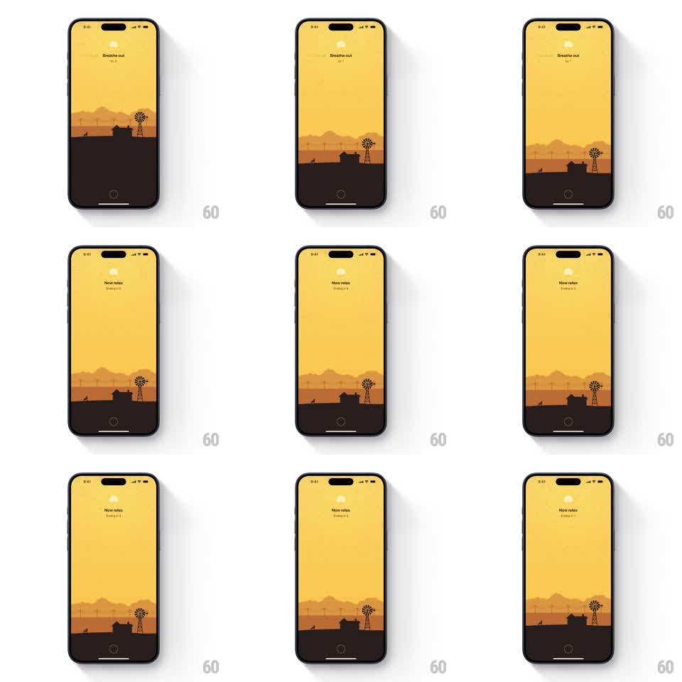

Media
Frame-by-frame

Rebuild this animation 1:1: Unwind's session-finished scene - the final "Breathe out" cue resolves into a "Now relax" state with a short countdown, the farm landscape settling into dusk while text crossfades overhead.

Rebuild this animation 1:1: Unwind's session-finished scene - the final "Breathe out" cue resolves into a "Now relax" state with a short countdown, the farm landscape settling into dusk while text crossfades overhead.
## Integration
Integration: stack-agnostic spec - springs given as stiffness/damping, timed motions as duration + curve; map every value to your framework and animation library of choice.
## Scene
Unwind's session screen at completion: a dusk farm landscape in warm yellow and dark brown - fields, a farmhouse, a windmill, a low sun. Overhead text reads "Breathe out" with a breath counter, then crossfades to "Now relax" with a countdown ("Ending in 5" down to "Ending in 1"). A circular close button sits at the bottom center.
## Motion spec
Pattern: session outro sequence, ~8s.
- The last "Breathe out" cue holds ~2s, then crossfades to "Now relax" (400ms) - only the text swaps, the layout stays centered.
- The countdown ticks once per second, each number crossfading (200ms), from "Ending in 5" to "Ending in 1".
- The landscape stays alive underneath: the windmill blades turn slowly (~6s per revolution), the sun glows with a faint pulse, layers of field and farmhouse sit still.
- The sky gradually deepens toward dusk over the whole outro (~8s, linear).
- At zero, the session view settles - the countdown text fades out, leaving "Now relax" and the close button.
## Calibration
- The text crossfades are gentle; nothing slides or pops.
- The windmill is the one mechanical motion - continuous, slow, unhurried.
## Reduced motion
Text crossfades as normal; the windmill and sun stay static.
## Don't miss
- The sequence is text-led: breathe cue, relax state, countdown - the landscape is ambience, not the timer.
- The circular close button is present throughout, fixed at the bottom.